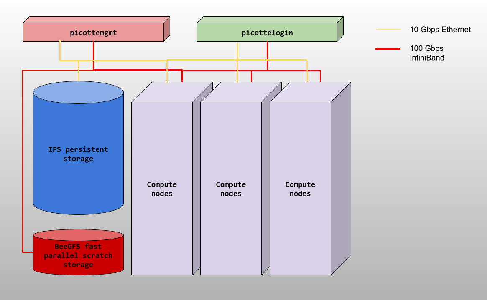

The structure of the Picotte Cluster
The structure of the Picotte Cluster#
The computers that make up the Picotte cluster are called nodes. Most of the
nodes on Picotte are compute nodes, that can perform fast calculations on large
amounts of data. There is also a special node called the login node; it runs
the server, which works like the interface between the cluster and the outside
world. The people with Picotte accounts can log into the server by running a
client (such as ssh) on their local machines.
Our client program passes our login credentials to this server, and if we are allowed to log in, the server runs a shell for us. Any commands that we enter into this shell are executed not by our own machines, but by the login node.
DO NOT RUN WORK ON PICOTTE LOGIN (PICOTTE001)

Another special node is the scheduler; Picotte users can get from the login node to the compute nodes by submitting a request to the scheduler, and the scheduler will assign them to the most appropriate compute node. Picotte also has a few so-called “service” nodes, which serve special purposes like transferring code and data to and from the cluster, and hosting web applications.
Picotte hardware includes the followings:
74 standard compute nodes:
Dell PowerEdge R640 servers Intel® Xeon® Platinum 8268 CPUs
48 cores/server
192 GB RAM/server.
2 large memory nodes:
Dell PowerEdge R640 servers Intel® Xeon® Platinum 8268 CPUs
48 cores/server
1.5 TB RAM/server
12 graphical processing unit nodes
Dell PowerEdge C4140 servers Intel® Xeon® Platinum 8260 CPUs
48 cores/server
4 Nvidia Tesla V100-SXM2 32GB GPU devices/server
192 GB RAM/server